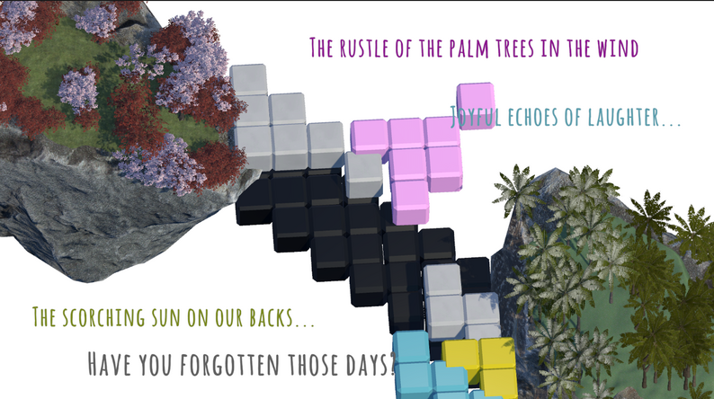
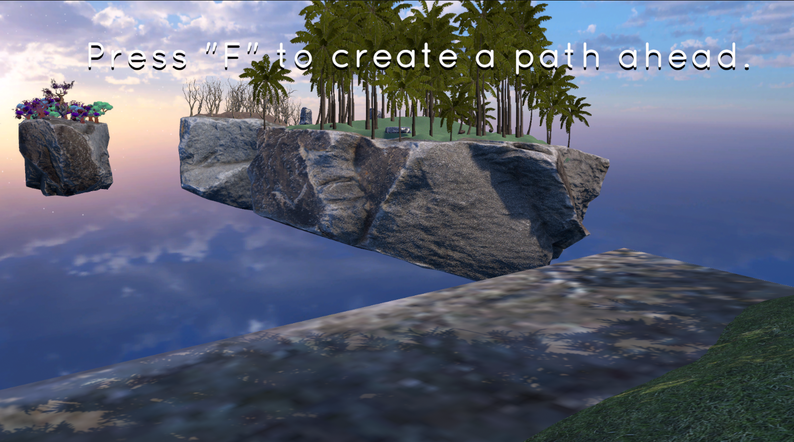
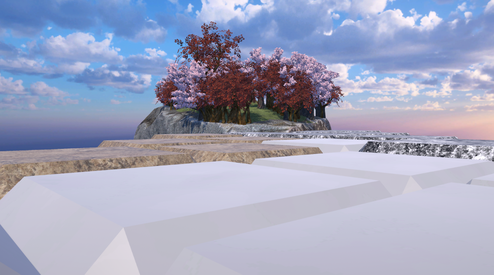
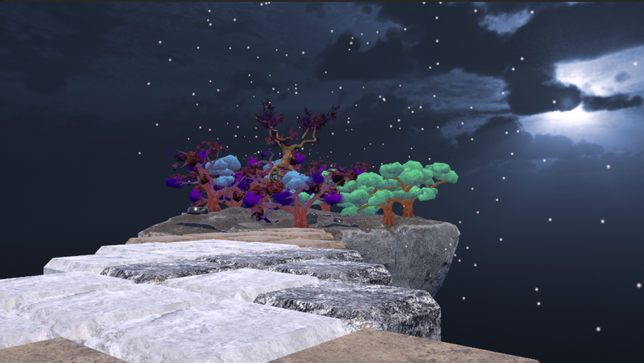
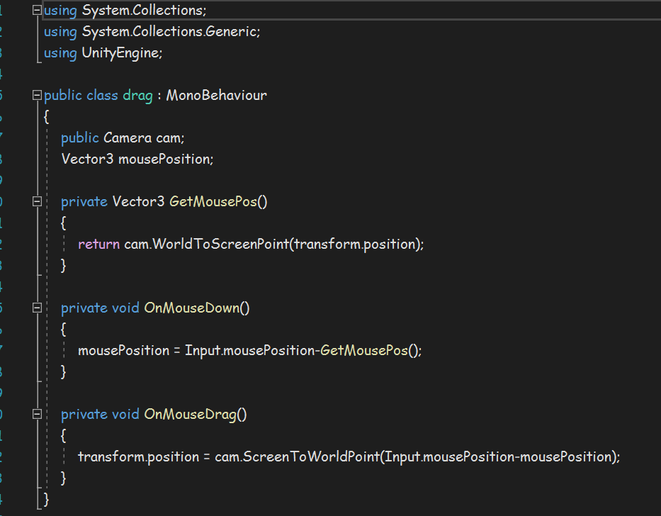
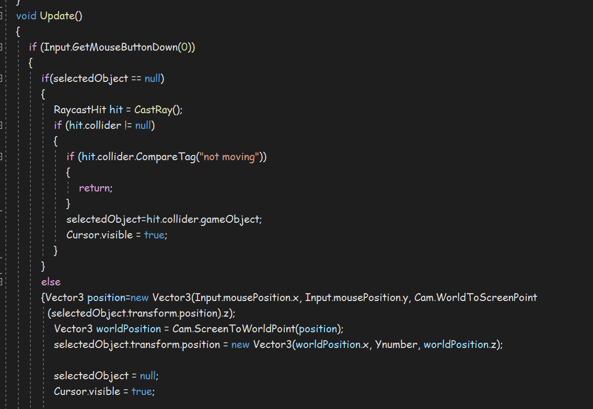
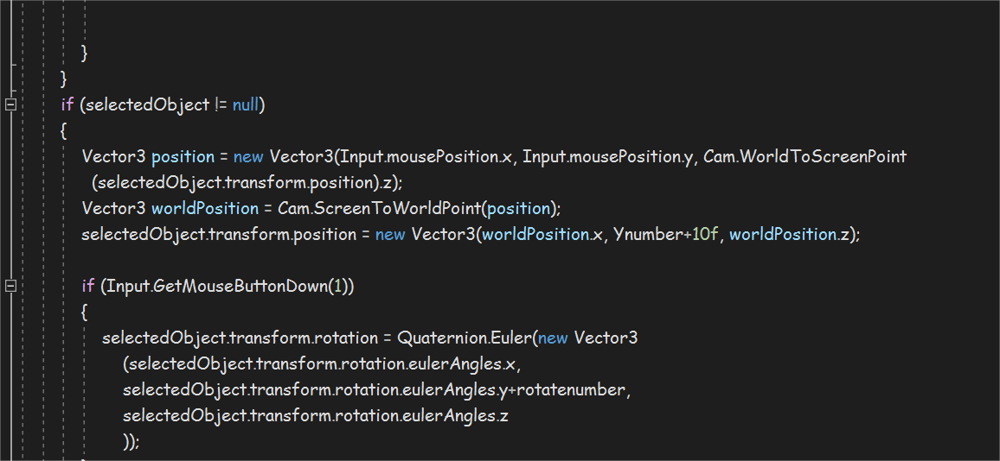

Main
Page
Game
Design
Weekly Project
Toy Controller
Fragmented Islands
Sky Skater
Fragment Island
<h2>description</h2> <div class="two_image">  <div> <p>The Theme of this project is Impossible Environment. For an impossible environment, we are inspired by the game, Nanashi No Game. In this game, the main character has a phone and whatever happens in the real world will affect the world inside the phone as well. Based on that, we want to do a game that has both a 3d and 2d environment, and they will influence each other to make the story prograss. <br><br> In our game, what we did is by solving the puzzle in the 2d world, there will be a road that appears in the 3d world allowing the player to step on to the following land. The 2d world is a smaller and 2d version of the real world, every piece of the puzzle being placed in the correct position will magically appear in the real world too. </p><br><br> <a href="https://starlightsoda.itch.io/fragmented-islands" target="_blank"id="gamepage">Click here to Play the Game</a> </div> </div>s <div class="three_image">    </div> <h2>Details within the Game</h2> <div class="three_image"> <div class="image"> </div> <div class="image"></div> <div class="image"></div> </div> <div class="popup-img"> <span> × </span> <img src="images/arduino_code.png"> </div> <h2>Responsibilities</h2> <p>Team Size: 2<br> -design puzzle with different difficulty<br>-code for pick, rotate, drop the puzzle piece<br>-code for detecting if pieces is in correct position and shuffle them at the start</p> <h2>Reflections</h2> <p>Overall, I think I accomplished all the tasks I am responding for, the code and design side of the puzzle in the 2d world. All the action including picking, dropping and rotating can be completed smoothly. From playtesting, there are possibilities of the player does not realizing the puzzle piece is placed or not placed in the right position. Although there is a pulling force when the puzzle is in the right position, many players did not realize that while playing. The difficulty progress in the last two levels can be thought about more also. </p> </main> <footer> Email:zhany418@newschool.edu </footer> <script src="../../enlarge_image.js"></script> <script src="../scripts/dropdown-menu.js"></script> </body> </html>